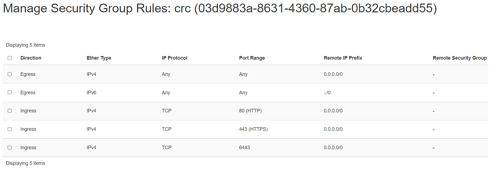

CRC - Red Hat Code Ready Containers
Red Hat CodeReady Containers allows you to spin up a small Red Hat OpenShift cluster on your local PC, without the need for a server, a cloud, or a team of operations people. For developers who want to get started immediately with cloud-native development, containers, and Kubernetes (as well as OpenShift), it's a simple and slick tool. It runs on macOS, Linux, and all versions of Windows 10.
Minimum system requirements for CRC
CodeReady Containers requires the following system resources:
4 virtual CPUs (vCPUs) 8 GB of memory 35 GB of storage space
Pre-requisite
We will need 1 VM to create a single node kubernetes cluster using crc.
We are using following setting for this purpose:
- 1 Linux machine, fedora-36-x86_64, cpu-a.16 flavor with 16vCPUs, 32GB RAM, 20GB storage - also assign Floating IP to this VM.
Prepare host for CRC
Run the below command on the CRC's VM:
- SSH into crc machine
Important Note
Please run the following commands not using root user.
On newly built VM download CRC using your redhat login, from:
https://console.redhat.com/openshift/create/local
To save transfer hassle you can, curl CRC bundle directly to the VM, using the url from a "Download CodeReady Containers" button in redhat console.
curl \
https://developers.redhat.com/content-gateway/rest/mirror/pub/openshift-v4/\
clients/crc/latest/crc-linux-amd64.tar.xz \
--output crc-linux-amd64.tar.xz -L
then click "Copy pull secret" button from the same console page and save it
to a file somewhere (for example ~fedora/pull-secret)
- Setup crc binary to be accessable
tar -xvf crc-linux-amd64.tar.xz
mkdir -p ~/bin
mv crc-linux-1.34.0-amd64/crc ~/bin/
export PATH=$PATH:$HOME/bin
echo 'export PATH=$PATH:$HOME/bin' >> ~/.bashrc
Note
This CRC version crc-linux-1.34.0-amd64 may be different when you
are installing! Please update it as your are running above command.
Install and configure CRC
- Run the install (you can choose to answer N for collecing data by RedHat when prompted on terminal). Also, CRC has trouble starting with default resources allocated to it, that is why additional steps need to be taken allocationg addtional memory to it. Additional cores added as well, but this may not be as critical to it's performance.
crc setup
- Paste crc secret copied during previous prep step when prompted for
"? Please enter the pull secret" by
crc startterminal.
crc start
- Make a note of user login info displayed once install is finished. Output would look like below:
Started the OpenShift cluster.
The server is accessible via web console at:
https://console-openshift-console.apps-crc.testing
Log in as administrator:
Username: kubeadmin
Password: ... #pragma: allowlist secret
Log in as user:
Username: developer
Password: ... #pragma: allowlist secret
Use the 'oc' command line interface:
$ eval $(crc oc-env)
$ oc login -u developer https://api.crc.testing:6443
Note
We can set memory and cpu for the CRC instance using:
crc config set memory 24576 and crc config set cpus 12
Using CRC CLI
- Setup your environment
eval $(crc oc-env)
- To look up CRC login credentials you can run. This will provide the
oc logincommands with password info for bothadminanddeveloperusers.
crc console --credentials
To login as a regular user, run 'oc login -u developer -p developer https://api.crc.testing:6443'.
To login as an admin, run 'oc login -u kubeadmin -p MTNAK-YHvuU-FIuSt-qgAxd https://api.crc.testing:6443'
Using CRC web interface
Install and configure HAPROXY first
-
Switch as root:
sudo su -
Install the package
sudo dnf install haproxy policycoreutils-python-utils
- Update configuration
cd /etc/haproxy
sudo cp haproxy.cfg haproxy.cfg.orig
- Clean the content of
/etc/haproxy/haproxy.cfg:
sudo echo > /etc/haproxy/haproxy.cfg
- Replace
/etc/haproxy/haproxy.cfgwith
cat <<EOF | sudo tee /etc/haproxy/haproxy.cfg
global
defaults
log global
mode http
timeout connect 0
timeout client 0
timeout server 0
frontend apps
bind SERVER_IP:80
bind SERVER_IP:443
option tcplog
mode tcp
default_backend apps
backend apps
mode tcp
balance roundrobin
option ssl-hello-chk
server webserver1 CRC_IP:443 check
frontend api
bind SERVER_IP:6443
option tcplog
mode tcp
default_backend api
backend api
mode tcp
balance roundrobin
option ssl-hello-chk
server webserver1 CRC_IP:6443 check
EOF
Switch out from root to fedora user and then continue following steps:
- Plugin your servers and
crc ipaddresses
# this may be different depending on your setup
export SERVER_IP=$(hostname --ip-address |cut -d\ -f3)
export CRC_IP=$(crc ip)
sudo sed -i "s/SERVER_IP/$SERVER_IP/g" /etc/haproxy/haproxy.cfg
sudo sed -i "s/CRC_IP/$CRC_IP/g" /etc/haproxy/haproxy.cfg
sudo semanage port -a -t http_port_t -p tcp 6443
- Start haproxy
sudo systemctl start haproxy
sudo systemctl status haproxy
Ensure haproxy is in running status.
Configure your local workstation to resolve CRC addresses
Add security groups for your CRC instance to open ports 80, 443 and 6443. In our example setup, the Security Group Rules that are attached to a new Security Rule to the CRC instance has entries like this:

Configure your local workstations host lookup to resolve names associated with CRC to the Public IP i.e. Floating IP address of your openstack VM instance.
This can be done in several ways:
1) RH document [2] describes a dnsmasq configuration.
2) A simpler path for Linux and Mac users is just to create an entry in your
/etc/hosts file or for Windows users find it at C:\Windows\System32\Drivers\etc\hosts.
Associate your CRC servers public ip retrieved from Horizon with hostnames:
- api.crc.testing
- canary-openshift-ingress-canary.apps-crc.testing
- console-openshift-console.apps-crc.testing
- default-route-openshift-image-registry.apps-crc.testing
- downloads-openshift-console.apps-crc.testing
- oauth-openshift.apps-crc.testing apps-crc.testing
For example, using #2 by adding an entry in your /etc/hosts file in your local
machine.
Your local machine's /etc/hosts may have an entry looks like this:
<Your CRC Instance's Floating IP> api.crc.testing canary-openshift-ingress-canary.apps-crc.testing
console-openshift-console.apps-crc.testing default-route-openshift-image-registry.apps-crc.testing
downloads-openshift-console.apps-crc.testing oauth-openshift.apps-crc.testing apps-crc.testing
Use what's appropriate to your environment, ask for help if unsure.
Point your browser https://console-openshift-console.apps-crc.testing and log in
using crednetials provided by the output of crc start or crc console --credentials
command.